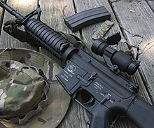

Airsoft, also known as survival game (Japanese: サバイバルゲーム, romanized: sabaibaru gēmu) in Japan where it was popular, is a team-based shooting game in which participants eliminate opposing players out of play by shooting them with spherical plastic projectiles shot from airsoft guns. Although similar to paintball in concept and gameplay, airsoft pellets do not leave visible markings on their target and hits are not always apparent. Though the pellet impacts can leave small bruises or welts on exposed skin (and so protective gear is still recommended), the game relies heavily on an honor system in which players who have been hit are expected to call themselves out of play in keeping with honesty and sportsmanship.[1] The airsoft guns used are mostly magazine-fed, with some having manual/battery motor-powered spring-piston pump power plants similar to Nerf Blasters, or pneumatically powered by replaceable compressed gas (e.g. propane ("green gas"), 1,1,1,2-tetrafluoroethane or CO2) canisters.[2] Many airsoft guns also have mounting platforms compatible with genuine firearm accessories, and most cosmetically resemble real firearms. This makes them popular for military simulation and historical reenactments. There are also professional gun safety and weapon manipulation training conducted with airsoft in some fields, such as law enforcement training,[3] due to better safety and lower cost. The United States Coast Guard, for instance, officially adopted airsoft for training in 2018.[4][5] Airsoft gameplay varies in style and composition, but often ranges from action shooting to short organized live action role-playing (LARP) scenarios, close quarters battle skirmishes, military simulations (MilSim) or historical reenactments.[6] It is played in indoor courses or outdoor fields.[7] Combat situations on the field may involve the use of genuine military tactics to achieve objectives set in each game. Participants may attempt to emulate the tactical equipment and accessories used by modern military and police organizations. A game is normally kept safe by trained professionals acting as supervisors and marshals.[8] Before gameplay, an airsoft gun's muzzle velocity is usually checked through a chronograph and usually measured in feet per second (FPS) or joules, a measurement for kinetic energy. Some countries have a set velocity or muzzle energy restriction; guns shooting over the legal muzzle velocity can be confiscated. Some playing fields further restrict minimum engagement distances,[9] requiring players to yell "Bang Bang!" or another phrase instead of actually shooting other players at close distances. This is done to prevent any potential injuries from high-energy pellets shot at short ranges.
History
Airsoft originated[11] from Japan in the early 1970s, when photographer Ichiro Nagata, an avid shooting enthusiast himself, thought about making model guns that shoot real projectiles that could not kill. These "guns" were trademarked as soft air guns, tailoring to the needs of shooting enthusiasts while conforming to Japan's strict weapons control laws. The name "soft air" referred to the compressed Freon-silicone oil mixture (later replaced by a propane-silicone oil mixture known as "Green Gas") that was used as a propellant gas, which was significantly weaker than the canistered CO2 used in proper airguns (pellet guns and BB guns). Originally designed for target shooting, the plastic balls used in these "soft air guns" can be shot at humans without causing injury due to the low muzzle energy. After Tokyo Marui introduced its revolutionary electric motor-gear box design, which allows sustainable rapid-fire using rechargeable batteries, soft air guns became popular for casual wargames, which the Japanese call survival games (サバイバルゲーム, sabaibaru gēmu).[12] Asahi Firearms was a model company from Japan who operated in the 1980s and 90s and was one of the early pioneers of the airsoft hobby.[13] Airsoft guns spread to the United Kingdom in the late 1980s and early 1990s via a company called LS. They were sold in separate pieces and had to be assembled out of box before they were capable of shooting. These then became available to the rest of Europe and North America and rapidly gained popularity worldwide. Since the mid-1980s, airsoft has been adapted with a purely recreational application in mind, and the sport is enjoyed by all ages. Airsoft replicas are produced globally, with the majority being manufactured in East Asia. Many law enforcement agencies and military units within the United States now start using airsoft for force-on-force tactical training drills.[14]
Equipment

The guns used in airsoft are typically classified as imitation firearms. They have a mechanism for shooting projectiles 6 mm or 8 mm in diameter.[15] Airsoft guns are classified according to their operating principle, which can be spring-loaded, electric (battery-powered Automatic Electric Guns, Airsoft Electric Guns or "AEGs"), or gas-powered (if these have a blowback feature they are known as "GBBs").[16] Some companies produce full replicas of counterpart grenade launchers which fire a projectile spray of 6 millimetres (0.24 in) pellets by use of a high-powered spring mechanism or a compressed gas propellant (i.e. green gas, propane, compressed air, or CO2). There is also a type of airsoft gun that is powered by a single (HPA) high-pressure air tank and a battery pack to power the internal FCU "Fire Control Unit" computer board. These guns are often known for their high and adjustable ROF or "rate of fire" and durability.[17] These HPA replicas are most often referred to as "PolarStars", although this refers to a popular brand of HPA engines and accessories.
See also
- Legal issues in airsoft
- Airsoft gun
- Airsoft pellets
- IPSC Action Air
- Thunder-B (Airsoft grenade)
- BB gun
- Gel blaster